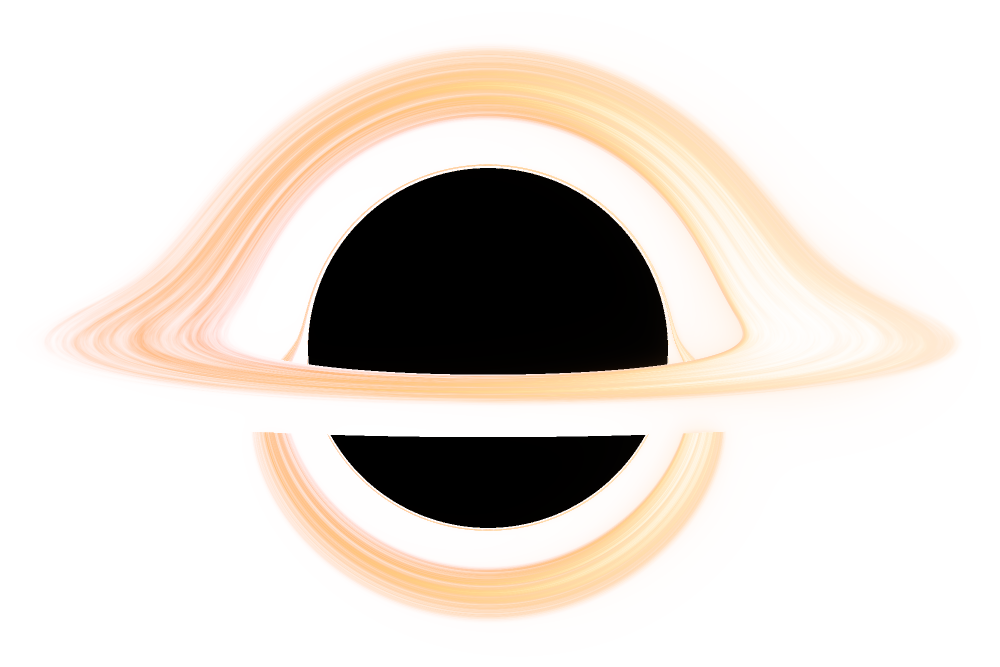

Parallax
Production pipelines for Roblox games, run by your AI coding agent.
Eight pipelines (3D models, visual effects, animation, worlds, interfaces, sound, gameplay systems and QA) served to your AI client as an MCP tool. Stages cannot be skipped, results are measured, and your verdict decides what counts as good.
What Parallax is
A toolkit that an AI coding agent drives for you. You ask for something in plain words, such as "start the 3d lane: a mossy stone well for the village square", and the agent runs the right pipeline through the Parallax MCP server and its command line, lune run parallax.
Stages that cannot be skipped
Each pipeline is a fixed series of stages, the way a studio department works: references first, a plan you approve, the build, measurements that must pass, and your verdict.
Results that are measured
Budgets, playability, motion, loudness, readability and security are checked by numbers. A failing gate stops the work and names the fix.
Your verdict is the signal
The agent cannot call its own work good. A verdict of 7 or above joins the golden set; 3 or below puts the route in the graveyard, refused next time unless you say otherwise.
Works with your AI client
Claude Code, Cursor, VS Code, Gemini CLI, Codex, Windsurf, Roo, OpenCode, Cline and Claude Desktop. One command connects the client you use.
Runs on your machine
Blender, local vision models and the Roblox Studio MCP do the heavy work. No paid generators and no local LLM are required: your AI client does the thinking.
Always a next step
Every command ends with summary: (what happened) and next_action: (exactly what to do next), so any model, or you, can continue.
The eight pipelines
Each pipeline has its own stages, approvals, gates and limits. Pick one to see it in depth.
3D models
Weapons, props, vehicles, creatures and building pieces, built part by part from real references in 10 stages, with a model sheet and a blockout you approve.
Visual effects
Slashes, beams, auras, explosions and impacts, authored from a measured breakdown of real footage, with a beat chart and an animatic you approve.
Animation
R6 attacks, abilities, emotes, idles and hit reactions, measured against real timings, gated on motion and proven in Studio frame by frame.
Worlds
Arenas, lobbies, towns, interiors and open terrain from JSON blueprints, proven playable by numbers before anyone walks them.
Interfaces
HUDs, menus, shops and dialogs that share one visual identity, previewed at phone, tablet and desktop sizes with the real fonts.
Sound
Hits, swings, UI clicks and ambience, made of real recordings layered with synthesis, measured by "ears" and judged by you in a listening booth.
Gameplay systems
Server-authoritative code: validated, rate-limited remotes generated from schemas, moves as data, fuzzing, mutation testing and Studio playtests.
QA
A security audit of every remote, a self-test that proves each gate still catches its bad example, and scripted in-engine playtests.
How a request flows
From your words to a finished piece that you have judged.
Start the lane
The agent calls
parallax_startwith your request. The kit compiles it, finds the matching case and loads the lane's recipe, lessons and past verdicts. Pipeline commands are refused until this happens.Plan, then build in stages
Each lane works through its stages. The ones that set the look (a model sheet, a blockout, a beat chart, a pose sheet, a direction) wait for your approval.
Gates measure
Budgets, playability, motion, loudness, readability and security are checked by numbers. A failing gate stops the work.
You judge
Your verdict (0-10) is the only quality signal. It decides what joins the golden set and which routes go to the graveyard.
It learns
Lessons are ranked by relevance and must be answered before the next similar piece is built.
Enforced, not advisory
The rules are checked by the tools themselves, not left to the agent's good behaviour.
The MCP server gate
A pipeline command sent through the MCP server without a fresh session is refused, with the exact call to make instead.
The command-line gate
Every command passes a check first: the session token, a plan file for heavy builds, and the routes the case forbids.
Client guard hooks
For Claude Code and Gemini CLI, connect also installs hooks that block pipeline writes made around the kit.
Locks, clocks and git hooks
Approvals lock each key stage. Every 3D, VFX, UI, animation, sound and world piece runs against a 10, 30 or 60-minute clock. A commit must pass format and lint checks, and one that mixes two lanes needs the word cross.
Hardware tiers
Each tier includes the ones below it. lune run parallax doctor tells you which tier your machine reaches, and what the next one needs.
| Tier | What you need | What it adds |
|---|---|---|
| Tier 0 | Any PC | The board, the gates, gameplay systems, worlds as geometry, sound synthesis and its checks, and the git hooks. Commands that need Blender or local models wait for their tier. |
| Tier 1 | Any CPU, plus Blender 5.2 | Renders, bakes, CAD parts and simulation in Blender. |
| Tier 2 | A CPU or a 4 GB GPU; about 2.4 GB of models | The core vision models: cut-outs, depth, edges, similarity search, upscaling. |
| Tier 3 | An NVIDIA GPU with 12 GB, 16 GB of RAM; about 44.6 GB more weights, some of which run in environments you set up from kit/gen/README.md | A local vision-language model, depth and surface estimation, concept pictures, text-prompted masks. |
| Tier 4 | CUDA 13, 12-16+ GB of VRAM, 32 GB of RAM, MSVC 2022 | Image editing from one picture and the local 3D generators. |
Quick start
The full guide, written so an AI agent can follow it for you, is on the setup page. On Windows, in PowerShell:
git clone https://github.com/mayusi/parallax.git
cd parallax
rokit install
wally install
lune run parallax doctor
lune run parallax install ..\MyGame
cd ..\MyGame
lune run parallax connect claudeUse your client's name in place of claude: cursor, vscode, gemini, roo, opencode, codex, windsurf, cline or claude-desktop. Then open the client in MyGame and ask for something.
Files go to Roblox through the Roblox Studio MCP's Open Cloud tool, using your own Studio login. An API key in the environment remains available as a route for scripts and CI. How uploads work →
Where it is going
Parallax is built for Roblox today, and about 70% of the kit does not depend on the engine. The engine is a setting in kit.config.json, and the plan is Godot first (plain-text scenes, native glTF import, a headless mode for CI), then Unreal and Unity. Windows comes first; most commands also run on macOS and Linux, and full support for them is on the roadmap.